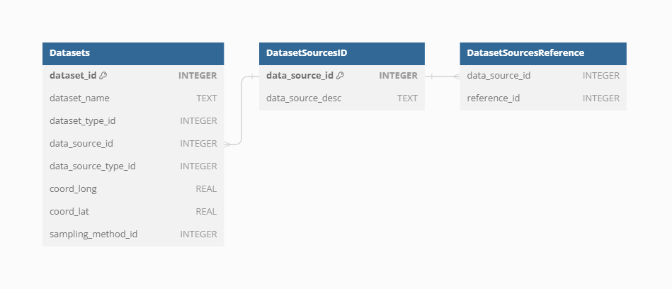
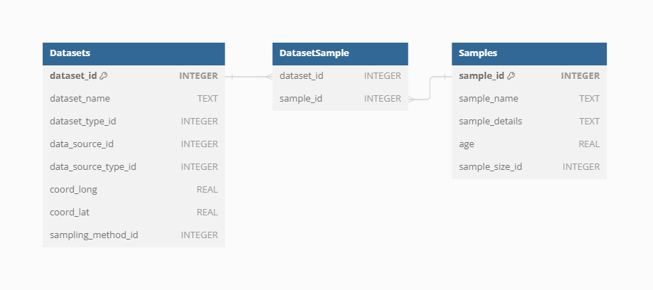
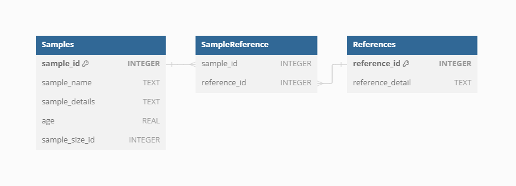
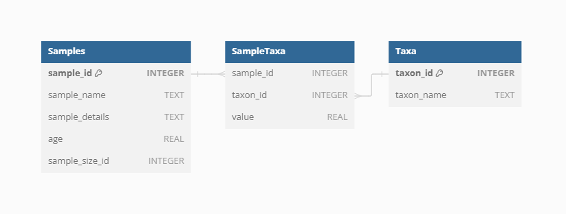
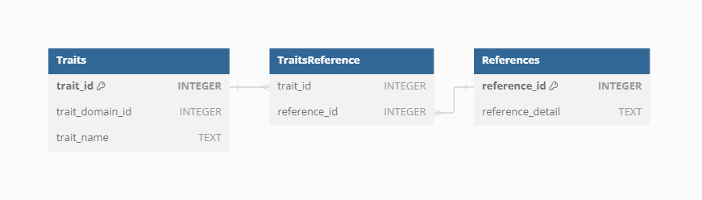

VegVault database
Section I: Description of VegVaul
VegVault is a SQLite interdisciplinary database linking plot-based vegetation data with functional traits and climate. Specifically, it contains:
- current vegetation plot data
- past vegetation plot data (fossil pollen records)
- functional trait data
- current abiotic data (climate, soil)
- past abiotic data (climate)
The goal of the database is to compilate interdisciplinary data …
Section II: Overview of VegVault 1.0.0
The database is structured in several logical levels, such as Dataset, Sample, Taxa, Trait, etc.
Dataset
Dataset represents the highest levels in the hierarchy. It is the main keystone in the VegVauls structure.
Dataset Type
dataset_type_id defines the basic type of a dataset. This is the highest level of classification of the data
Currently, there VegVault consist of those types:
- vegetation_plot - current vegetation plot dataset
- fossil_pollen_archive - past vegetation plot dataset
- traits - dataset containing functional traits
- gridpoints - artificially created dataset to hold abiotic data


Dataset Source-Type
dataset_source_type_id defines the general provider of the dataset. This should help to classify, which data pipeline was used to import the dataset into the VegVault, This is also the first general point of reference of data, as all large databases have a citation statement.
Currently, there VegVault consist of those source-types:
- BIEN - Botanical Information and Ecology Network
- sPlotOpen - The open-access version of sPlot
- TRY - TRY Plant Trait Database
- FOSSILPOL - The workflow that aims to process and standardise global palaeoecological pollen data
- gridpoints - artificially created dataset to hold abiotic data


Dataset Source
Each individual dataset from a specific Data Source-Type can have information on the source of the data (i.e. sub-database). This should help to promote better findability of the primary source of data and referencing.

Currently, there are 706 sources of datasets.

Sampling method
Some datasets may differ in the way they have been sampled. This could be represented by different ways vegetation data have been sampled for Dataset Type of vegetation_plot, or depositional environment for Dataset Type of fossil_pollen_archive.


References
Dataset Source-Type, Dataset Source, and Sampling Method can have their own references. Moreover, each dataset can have one or more references directly to that specific data.

This means that one dataset can have one/several references from each of those parts. Let’s take a look at an example, of what that could mean in practice.
We have selected dataset ID: 91256, which is a fossil pollen archive. Therefore, it has the reference of the Dataser Source-Type: https://doi.org/10.1111/geb.13693 and reference for the individual dataset: Grimm, E.C., 2008. Neotoma: an ecosystem database for the Pliocene, Pleistocene, and Holocene. Illinois State Museum Scientific Papers E Series, 1.
Samples
Sample represents the main unit of data in the VegVault database.

Dataset-Sample
First Samples are linked to Datasets via the Dataset-Sample table.



Sample-size
Vegetation plots can have different sizes, which can have a huge impact on analyses. Therefore, the information about the plot is saved separately.


Sample age
The Vegvault database deals with both current and paleo data. therefore, each Sample has the indication of age, with modern samples being set to 0. To embrace the uncertainty from age-depth modeling paleo-record, the Vegvault database has a structure to hold an uncertainty matrix containing information about all potential ages of each Sample from a paleo Dataset.

We can show this on the previously selected fossil pollen archive with dataset ID: 91256.

Sample reference
Individual Sample can have specific references on top of the reference to Dataset

Taxa
The Vegvault database contains taxa names directly from main Data Source-types.

Individual taxa names are linked to the Samples by the SampleTaxa table.


Classification
In order to obtain classification of all taxa present in the Vegvault database, the {taxospace} R package has been utilized, automatically aligning the names to Taxonomy Backbone from Global Biodiversity Information Facility.
Classification up to the family level is then saved for each taxon.


Traits
Functional traits of vegetation taxa follow the same structure of Dataset and Samples obtained directly from Dataset Source-types.

Trait domain
As there are many varying names for the same “traits”, the Vegvault database contains Trait Domain information to group traits together.

There are currently 6 trait domains following the Diaz et al. (2016)
| Trait domain |
|---|
| Stem specific density |
| Leaf nitrogen content per unit mass |
| Diaspore mass |
| Plant heigh |
| Leaf Area |
| Leaf mass per area |

Trait Values
To store a trait value, information needs to be linked among Dataset, Sample, Taxa, and Trait.


Trait reference
For full clarity, on top of Dataset and Sample, each Trait can have additional references.

Abiotic data
Abiotic data is aimed to provide information about all relevant abiotic information affecting vegetation distribution and its traits.
Abiotic data is linked to the structure of the VegVault Database by the gridpoints, which are artificially created points to reasonably cover the resolution of both modern and past data for vegetation and abiotic data.

There are currently abiotic from CHELSA and CHELSA-TRACE21 and WoSIS. CHELSA and CHELSA-TRACE21 are built on the same structure of variables (visit the websites for more info).
| Variable name | Variable unit | source of data |
|---|---|---|
| bio1 | °C | CHELSA |
| bio4 | °C | CHELSA |
| bio6 | °C | CHELSA |
| bio12 | kg m-2 year-1 | CHELSA |
| bio15 | Unitless | CHELSA |
| bio18 | kg m-2 quarter-1 | CHELSA |
| bio19 | kg m-2 quarter-1 | CHELSA |
| HWSD2 | Unitless | WoSIS-SoilGrids |
Abiotic data is simply linked to Samples.


Note that the spatial resolution is higher for modern climate data than for the past. this is to reduce the size of the past climate data.

Section III: Assembly details of VegVault 1.0.0
WIP
Section IV: Examples of usage
WIP
Example 1:
WIP
Example 2:
WIP
Example 3:
WIP
Section V: Outlook and future directions
WIP